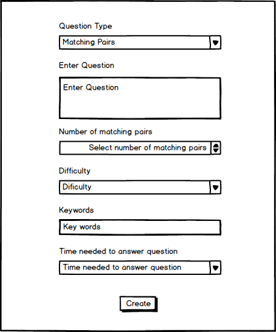
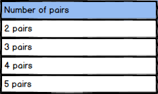
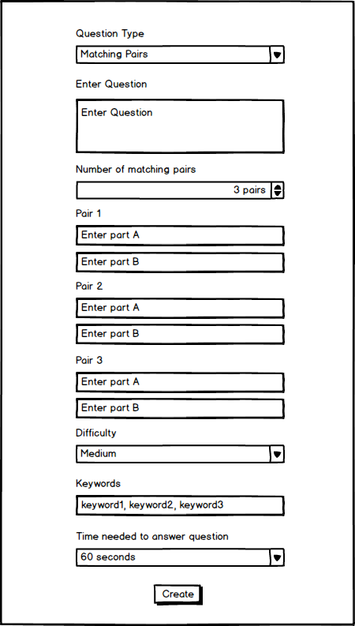

Figure 1 shows the form for adding a matching answers question before the form is completed.

Figure 1: Create Matching Answers Question Form
Enter the actual question into the labeled text area. Select number of matching pairs from the dropdown - Figure 2. Add answers to the table below by entering the text into the "Pair A" field and "Pair B" filed for each of the pairs. Answers can be added or removed with the "up" and "down" arrows respectively in the dorpdown.

Figure 2: Create Matching Answers Question Form
Figure 3 shows the form for adding a matching answer qurstion after the form is completed.

Figure 3: Create Matching Answers Question Form
After completing the offer, press the "CREATE" button to save the new question.